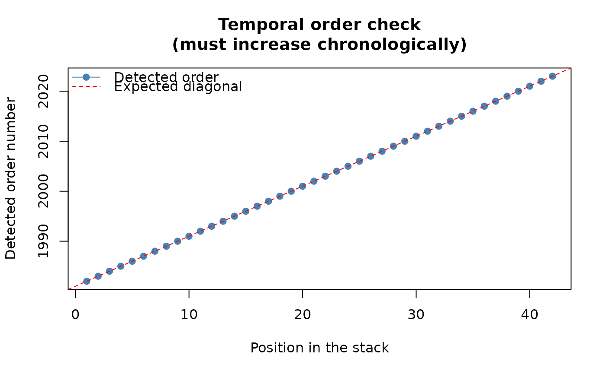
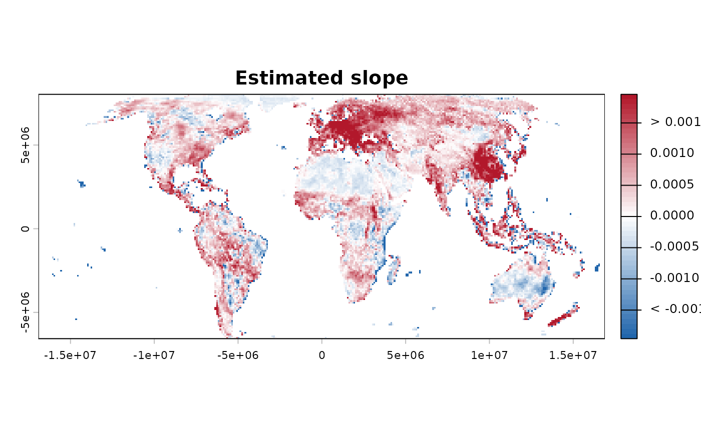

Estimates the magnitude of a monotonic trend, independently of its
statistical significance. trend_test() primarily tells you
whether there is evidence of a trend and its direction; although
its "OLS" branch necessarily returns a fitted coefficient, this
function provides the dedicated and method-independent estimation of
the rate of change, per cell, using one of three published
estimators (see the method argument below).
Usage
slope_estimator(
x,
method = c("TS", "OLS", "RM"),
t,
max_pairs = 1e+05,
seed = NULL,
n_cores = 1,
smooth_neighbourhood = FALSE,
report = TRUE,
verbose = TRUE,
shared_cluster = NULL
)Arguments
- x
A
terra::SpatRaster; each layer is one time step, in increasing chronological order.- method
Which slope estimator to use.
"TS"(default): the classic Theil-Sen estimator – the median of all pairwise slopes per cell, in the same units asxper unit oft. Robust (outlier-resistant) up to a ~29% breakdown point, at the cost of the performance profile described in "Computational considerations" below. This package's own default – see "Methodological details" below for why."OLS": ordinary least squares – the closed-form linear regression slope,cov(t, y) / var(t)per cell, computed directly with a single vectorised matrix operation (no pairwise sampling, no iteration –max_pairs,seed, andn_coresbelow are all ignored). Faster, and the more familiar choice to most users and to readers used to classical linear regression. Worth choosing over the default specifically when: speed matters more than robustness (very large rasters or very long series – see "Computational considerations" below); the residuals are genuinely expected to be close to normally distributed with no substantial outlier risk (in which case OLS is also the more statistically efficient of the two, with lower variance for the same data); or the result needs to be directly comparable to other analyses reported as classical linear-regression slopes, rather than a median-of-pairwise-slopes estimate."RM": Siegel's (1982) repeated median estimator – for each cell, the median slope from every observation to every other observation is computed first (one median per observation), then the median of those per-observation medians is taken as the final slope. Like"TS", median-based and highly robust – but with a 50% breakdown point rather than Theil-Sen's own ~29%, at a real computational cost: this is a naive O(n^2) port (see "Implementation notes" below), not the quasilinear-time algorithm the reference implementation this was ported from and verified against,robslopes::RepeatedMedian(), itself uses. Choose this over"TS"specifically when a dataset is suspected to have enough outliers or leverage points that Theil-Sen's own lower breakdown point might not fully resist them;max_pairs,seedandn_coresbelow are not used by this method (unlike"TS", it does not sample pairs, and is not currently parallelised).- t
Numeric vector of time points, one per layer. Defaults to
1:nlyr(x). Irregular spacing is supported, but values must be finite, unique and strictly increasing.- max_pairs
Integer or
Inf. Only used whenmethod = "TS". If the number of possible pairs (n*(n-1)/2) exceeds this, a random sample ofmax_pairspairs is used per cell (see "Computational considerations" below). Default100000; set toInffor the exact computation regardless of series length.- seed
Integer or
NULL. Only used whenmethod = "TS"and subsampling actually happens (random seed for the pair sampling).- n_cores
Integer. Only used when
method = "TS". Number of cores for the cell loop.1(default): sequential.> 1: uses aparallel::makeCluster()PSOCK cluster.- smooth_neighbourhood
Logical. Default
FALSE– the estimated slope (whichevermethodwas used) is left as computed, per cell independently. IfTRUE, each cell's slope is replaced by the median of the already-estimated slopes in its queen 3x3 neighbourhood (itself and its 8 surrounding cells) – a queen-neighbourhood median filter applied to the per-cell slopes already computed, not a different way of estimating any individual cell's own slope. See the dedicated section below; read it before setting this toTRUE.- report
Logical. If
TRUE(default), automatically print the summary (slope_summary()) and draw the map (slope_map()) once the slope finishes computing.- verbose
Logical. Print progress messages and elapsed time.
Advanced; most users never need this directly. An already-running
parallel::makeCluster()PSOCK cluster (e.g. fromworkflow_tst()'s ownn_cores) to reuse instead of building a new one fromn_coresabove. When supplied,n_coresis ignored – the shared cluster's own size was already decided by whoever built it.NULL(default): builds and tears down its own cluster fromn_cores, exactly as before this argument existed.
Value
Returns an object of class c("slope", "sptrends"): a list with
- slope
A single-layer
terra::SpatRaster, named"theilsen_slope","ols_slope"or"rm_slope"depending onmethod(units:xper unit oft, e.g. per year iftis in years).- intercept
Only for
method = "RM": a single-layerterra::SpatRaster(named"rm_intercept",NAfor invalid cells), the repeated median estimator's own intercept – see "Implementation notes" below for how it is computed. Smoothed the same wayslopeitself is whensmooth_neighbourhood = TRUE, for the same reason: aSpatRaster, matchingslope's own representation, rather than a plain numeric vector.- method
Character: which
methodproduced this result ("TS","OLS"or"RM").- smoothed
Logical: whether post-estimation neighbourhood smoothing (
smooth_neighbourhood = TRUE) was applied toslopeafter estimation, not whether smoothing was itself part of howslopewas computed.
Use print()/summary()/plot() – see print.sptrends(),
summary.sptrends(), and plot.sptrends().
Details
Function type: Companion function to trend_test() – one
of the three quantities a standard trend analysis normally reports
(alongside significance and multiple-testing correction), not a mere
supporting utility, though not one of trend_test() or
fdr_correction()'s own inferential building blocks either.
Typical use
Run this beside trend_test() on the same analytical series: the
slope measures magnitude, whereas the trend test assesses evidence.
If the test uses a prewhitened series, choose deliberately whether the
scientific estimand is the slope of that transformed series or of the
original series.
Methodological details
Why estimate the slope separately from the trend test?
Statistical significance and effect size answer different
questions. A statistically significant trend may be negligible in
magnitude, whereas a large estimated slope may fail to reach
significance when uncertainty is high. For this reason, sptrends
separates trend testing (trend_test()) from slope estimation
(this function), allowing each quantity to be interpreted
independently – neither substitutes for the other.
Methods and method selection
Original publication: Theil (1950), later generalised by Sen (1968) into the median-of-pairwise-slopes form used here (linking it to Kendall's tau).
Main references: Theil (1950) and Sen (1968), the two papers this estimator is directly named after. Full citations in "References" below.
Typical applications: estimating the magnitude of a monotonic trend when the data may contain outliers or heavy-tailed noise – robust up to a ~29% breakdown point, unlike ordinary least squares.
Theil-Sen vs. OLS: both quantify a linear rate of change, but they define and estimate that rate differently, under different statistical assumptions – Theil-Sen makes no distributional assumption about the noise and tolerates a substantial fraction of outliers before breaking down; OLS is highly sensitive to influential observations and heavy-tailed errors. Normality is not required to calculate the OLS slope itself, although conventional small-sample inference for it (its own standard errors and significance test) relies on additional distributional assumptions the point estimate does not need. See the
methodargument below for when each is the more defensible choice.
Implementation notes (method = "RM" specifically)
"RM" implements Siegel's (1982) repeated median estimator using
the upper-median convention robslopes::RepeatedMedian() itself
uses: for a vector of length k, the upper median is
sort(v)[floor((k + 2) / 2)]; this differs from stats::median(),
which averages the two central observations when k is even.
This implementation computes the estimator directly in O(n^2)
time. It therefore reproduces the estimator itself, but not the
faster, quasilinear-time algorithm (Matousek, Mount and Netanyahu,
1998) robslopes uses internally in C++.
The intercept follows the "direct" (also called "separate")
repeated-median convention, applying the same nested upper-median
operation to the pairwise intercepts, rather than the simpler
"hierarchical" convention (median(y - slope * t), using the
already-computed overall slope) – both are legitimate conventions
Siegel (1982) himself describes, but only the former matches
robslopes::RepeatedMedian()'s own intercept output.
Statistical assumptions and interpretation
All methods require finite, unique and strictly increasing time
values. Duplicates would produce undefined pairwise slopes for the
robust estimators, while unordered values would no longer describe
the chronological layer order; both are rejected before calculation.
Valid cells must have a complete time series. Each estimator
summarises change as one overall linear rate: "OLS" targets the
least-squares slope, "TS" the median pairwise slope, and "RM" the
repeated-median slope. The robust estimators do not require normally
distributed errors; OLS can still be calculated without normality,
but is more sensitive to outliers and influential observations.
Linear long-term change and seasonality
These estimators quantify an overall linear rate of change; they do
not model seasonal cycles or nonlinear temporal structure. For
strongly seasonal series, consider estimating the slope from
anomalies (see compute_anomalies()) or using an appropriate
seasonal model instead.
Computational considerations
Performance – read this before using long time series
The estimators have substantially different computational profiles. OLS is the fastest because it uses one vectorised closed-form calculation. Exact Theil-Sen is slower because it evaluates pairwise slopes, but it offers a strong practical balance between robustness, interpretation and computational cost and is therefore the recommended general-purpose estimator. The directly implemented repeated median is usually much slower than both because it calculates nested medians for every observation in every cell; reserve RM for cases in which its higher breakdown point is scientifically needed and its additional cost is acceptable.
The exact estimator needs every pairwise slope, n*(n-1)/2 of them
per cell – unlike the Mann-Kendall S statistic, this cannot be
accumulated as a running sum, so it does not benefit from the same
O(n^2)-time-but-O(1)-memory trick. For a modest n (a few dozen time
steps) this is fast. For long series (hundreds to thousands of steps –
e.g. multi-decade monthly data) the number of pairs per cell can reach
the hundreds of thousands, and computing an exact median that many times
per cell, over every cell, gets slow. Two ways to cope:
n_cores > 1: splits cells across aparallel::makeCluster()PSOCK cluster (each cell's pairs still computed exactly).max_pairs: ifn*(n-1)/2exceeds this, a random sample ofmax_pairspairs is used per cell instead of the full set (a standard approximation for Theil-Sen on long series). Random pair sampling approximates the exact Theil-Sen slope; increasingmax_pairsgenerally reduces Monte Carlo variability between runs and improves agreement with the exact estimate, though it is not guaranteed to be exactly unbiased in every finite sample.seedbelow controls the reproducibility of that approximation across runs. Set toInfto force the exact computation regardless ofn.
If speed genuinely matters more than robustness to outliers – very
large rasters, very long series, and residuals not expected to be
heavy-tailed or outlier-prone – method = "OLS" sidesteps this
entire performance question: a single closed-form matrix operation,
with no pairwise sampling and no per-cell iteration at all.
Optional queen-neighbourhood smoothing – read the caveats first
This is an optional visual/post-processing step, not part of the published Theil-Sen estimator itself.
What it does: smooth_neighbourhood = TRUE replaces each cell's
slope with the median of its own slope and its 8 queen neighbours (a
3x3 focal median), computed after the per-cell Theil-Sen estimation
above – it does not change how any individual cell's own slope is
estimated.
What it does not inherit: this is not the same thing as
trend_test()'s neighbourhood argument, and does not carry the
same justification. CMK's neighbourhood-adjusted statistic follows a
published, validated method (Neeti & Eastman, 2011) for the specific
question "is there a trend", where borrowing spatial evidence for a
yes/no decision is on solid ground. Smoothing the magnitude this
way has no equivalent literature backing here – it assumes
neighbouring cells share similar true slopes, which is not always
true (e.g. a valley cell next to a sunlit slope can have a genuinely
different real trend from its neighbours), and in that case this
would blend two different real signals into one, less accurate,
number for both.
When it might make sense: purely as a display/visual-smoothing aid for a map that will be read at a glance, where averaging out cell-to-cell estimation noise is more valuable than preserving every individual cell's own independent estimate – not as a way to "improve" the underlying statistic.
Warnings: off by default for the reasons above. If you use it,
validate it first for your own data and resolution using
sim_trend_stack() and compare_detections() against known ground
truth, rather than judging it only by whether the smoothed map looks
visually more coherent – a smoother-looking map is not the same as
a more accurate one.
One thing this smoothing does not do: extend the footprint of
"has data" beyond where data actually exists. A cell with no complete
time series of its own (its own slope is NA) stays NA after
smoothing, even if all 8 of its neighbours have valid slopes –
terra::focal()'s own default behaviour would otherwise fill such a
cell in from its neighbours, which would be presenting an estimate
for a location that was never actually observed.
Limitations
These estimators describe one overall linear rate and do not identify
breakpoints, nonlinear trajectories, or seasonal components. Cells
with incomplete time series are returned as NA. Optional spatial
smoothing changes the reported local magnitude and must not be
interpreted as part of any of the three published estimators.
Quality assurance
Theil-Sen slopes are compared exactly with
trend::sens.slope(), including tied data; OLS results are checked
against stats::lm(); and repeated-median slopes and intercepts are
checked against direct hand implementations. Automated tests also
cover irregular time coordinates, missing and constant series,
optional neighbourhood smoothing, raster return types, and
sequential/parallel equivalence. See ?sptrends for the common
release-check protocol.
References
method = "TS", original estimator:
Theil, H. (1950) A rank-invariant method of linear and polynomial regression analysis. Indagationes Mathematicae, 12, 85-91 (Part I; published in three parts). No DOI available (pre-DOI-era publication).
Generalisation into the median-of-pairwise-slopes estimator used by this function, linking it to Kendall's tau:
Sen, P.K. (1968) Estimates of the regression coefficient based on Kendall's tau. Journal of the American Statistical Association, 63, 1379-1389. doi:10.1080/01621459.1968.10480934
method = "OLS": the classical least-squares regression slope,
independently attributed to both of the following (no single
original paper; both pre-DOI-era):
Legendre, A.M. (1805) Nouvelles méthodes pour la détermination des orbites des comètes. Firmin Didot, Paris.
Gauss, C.F. (1809) Theoria motus corporum coelestium in sectionibus conicis solem ambientium. Perthes und Besser, Hamburg.
method = "RM", original estimator:
Siegel, A.F. (1982) Robust regression using repeated medians. Biometrika, 69(1), 242-244. doi:10.1093/biomet/69.1.242
The quasilinear-time algorithm the reference implementation this
was ported from and verified against, robslopes::RepeatedMedian(),
itself uses (not this package's own, deliberately simpler O(n^2)
port – see "Implementation notes" above):
Matoušek, J., Mount, D.M. and Netanyahu, N.S. (1998) Efficient Randomized Algorithms for the Repeated Median Line Estimator. Algorithmica, 20(2), 136-150. doi:10.1007/PL00009190
Documents robslopes itself, including the exact formula and upper-
median convention this port was verified against:
Raymaekers, J. (2023) robslopes: Efficient Computation of the (Repeated) Median Slope. The R Journal, 15(1), 249-260. doi:10.32614/RJ-2023-012
This function is used (not authored) by both of this package's own
integrated workflows, workflow_tst() and workflow_rta(), and by
the studies behind
them:
Gutiérrez-Hernández, O. and García, L.V. (2025) Uncovering true significant trends in global greening. Remote Sensing Applications: Society and Environment, 37, 101377. doi:10.1016/j.rsase.2024.101377
Gutiérrez-Hernández, O. and García, L.V. (2024) Robust Trend Analysis in Environmental Remote Sensing: A Case Study of Cork Oak Forest Decline. Remote Sensing, 16(20), 3886. doi:10.3390/rs16203886
See also
trend_test() for statistical evidence of temporal change;
workflow_trends(), workflow_tst(), and workflow_rta() for
workflows combining significance and magnitude.
Examples
# \donttest{
# Annual mean NDVI from the bundled environmental dataset.
r <- read_ordered_stack(example_data("vhp_ndvi"))
#> Temporal order auto-detected with pattern '(19[0-9]{2}|20[0-9]{2})'.
#> Automatic mode: order detected from file names. For higher reliability -- especially if the series is not annual -- supplying 'files' explicitly (with 'time' or 'cycle_type') is recommended. See ?read_ordered_stack.
#> Temporal order verification (mandatory, cannot be skipped):
#> stack_position detected_number file
#> 1 1982 VHP_SMN_annual_ndvi_1982.tif
#> 2 1983 VHP_SMN_annual_ndvi_1983.tif
#> 3 1984 VHP_SMN_annual_ndvi_1984.tif
#> 4 1985 VHP_SMN_annual_ndvi_1985.tif
#> 5 1986 VHP_SMN_annual_ndvi_1986.tif
#> 6 1987 VHP_SMN_annual_ndvi_1987.tif
#> 7 1988 VHP_SMN_annual_ndvi_1988.tif
#> 8 1989 VHP_SMN_annual_ndvi_1989.tif
#> 9 1990 VHP_SMN_annual_ndvi_1990.tif
#> 10 1991 VHP_SMN_annual_ndvi_1991.tif
#> 11 1992 VHP_SMN_annual_ndvi_1992.tif
#> 12 1993 VHP_SMN_annual_ndvi_1993.tif
#> 13 1994 VHP_SMN_annual_ndvi_1994.tif
#> 14 1995 VHP_SMN_annual_ndvi_1995.tif
#> 15 1996 VHP_SMN_annual_ndvi_1996.tif
#> 16 1997 VHP_SMN_annual_ndvi_1997.tif
#> 17 1998 VHP_SMN_annual_ndvi_1998.tif
#> 18 1999 VHP_SMN_annual_ndvi_1999.tif
#> 19 2000 VHP_SMN_annual_ndvi_2000.tif
#> 20 2001 VHP_SMN_annual_ndvi_2001.tif
#> 21 2002 VHP_SMN_annual_ndvi_2002.tif
#> 22 2003 VHP_SMN_annual_ndvi_2003.tif
#> 23 2004 VHP_SMN_annual_ndvi_2004.tif
#> 24 2005 VHP_SMN_annual_ndvi_2005.tif
#> 25 2006 VHP_SMN_annual_ndvi_2006.tif
#> 26 2007 VHP_SMN_annual_ndvi_2007.tif
#> 27 2008 VHP_SMN_annual_ndvi_2008.tif
#> 28 2009 VHP_SMN_annual_ndvi_2009.tif
#> 29 2010 VHP_SMN_annual_ndvi_2010.tif
#> 30 2011 VHP_SMN_annual_ndvi_2011.tif
#> 31 2012 VHP_SMN_annual_ndvi_2012.tif
#> 32 2013 VHP_SMN_annual_ndvi_2013.tif
#> 33 2014 VHP_SMN_annual_ndvi_2014.tif
#> 34 2015 VHP_SMN_annual_ndvi_2015.tif
#> 35 2016 VHP_SMN_annual_ndvi_2016.tif
#> 36 2017 VHP_SMN_annual_ndvi_2017.tif
#> 37 2018 VHP_SMN_annual_ndvi_2018.tif
#> 38 2019 VHP_SMN_annual_ndvi_2019.tif
#> 39 2020 VHP_SMN_annual_ndvi_2020.tif
#> 40 2021 VHP_SMN_annual_ndvi_2021.tif
#> 41 2022 VHP_SMN_annual_ndvi_2022.tif
#> 42 2023 VHP_SMN_annual_ndvi_2023.tif

#> Stack built: 42 layers, 146 x 338 cells.
#> >> [read_ordered_stack()] elapsed: 0.09 s
# The rate of change per cell, in NDVI units per year (the raster's
# own time unit) -- this is "how fast", not "is it significant" (that
# is what trend_test()/workflow_tst() answer instead).
result <- slope_estimator(r, verbose = FALSE, report = FALSE)
# A "slope" object: result$slope is the SpatRaster itself; plot() and
# summary() give the diverging map and the descriptive statistics
# without reconstructing either by hand.
plot(result)

summary(result)
#> Valid cells: 15675
#> Slope range: [-0.009883, 0.008481]
#> Median slope: 0.000279 | Mean slope: 0.0003253
#> Increasing: 10555 (67.3%) | Decreasing: 5101 (32.5%) | Flat: 19 (0.1%)
# Ordinary least squares: much faster (a single closed-form matrix
# operation, no pairwise sampling) -- see "Methodological details"
# for when this efficiency is, and is not, worth
# its own trade-offs relative to the two rank-based methods.
result_ols <- slope_estimator(r, method = "OLS", verbose = FALSE,
report = FALSE)
# }